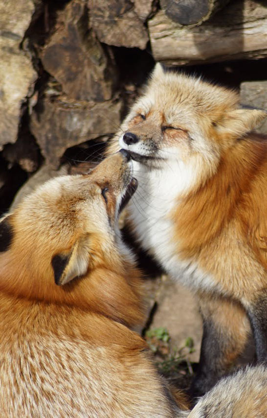
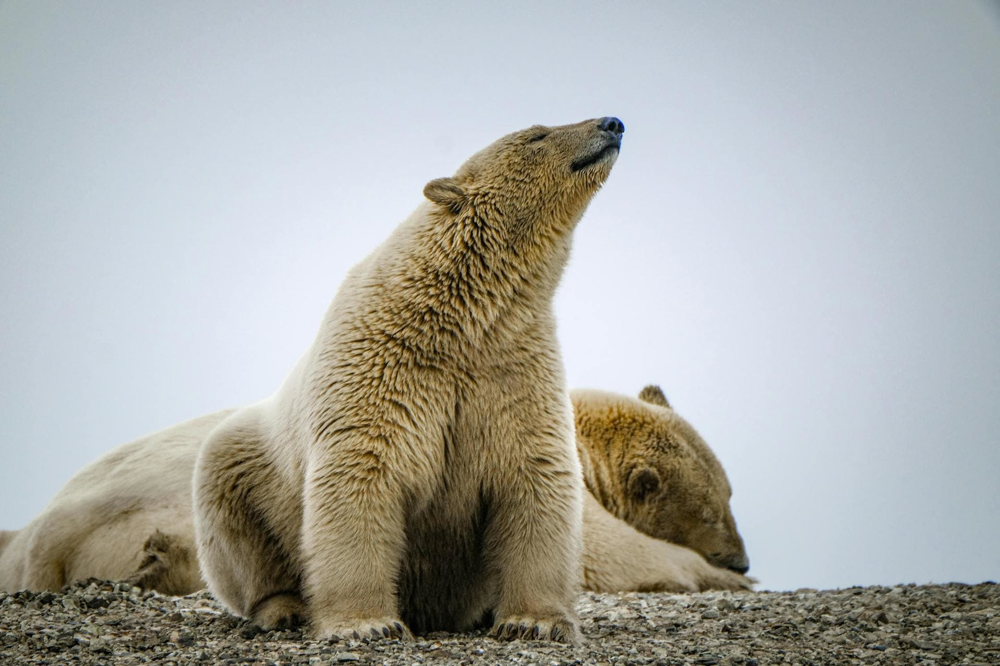
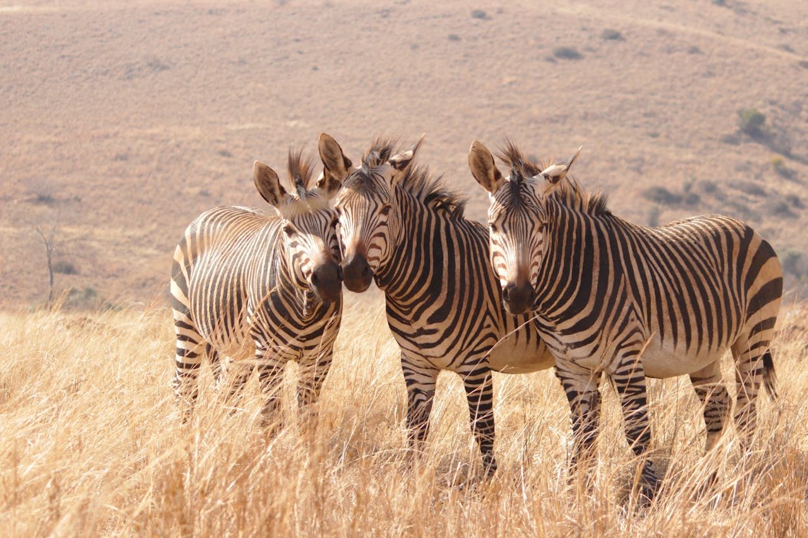

Foxes are small-to-medium-sized omnivorous mammals belonging to several genera of the family Canidae. They have a flattened skull; upright, triangular ears; a pointed, slightly upturned snout; and a long, bushy tail ("brush").

Polar bears (Ursus maritimus) are large carnivorous mammals native to the Arctic, known for their impressive adaptations to cold environments and their reliance on sea ice for survival.

Zebras (subgenus Hippotigris) are African equines with distinctive black-and-white striped coats. There are three living species: Grévy's zebra (Equus grevyi), the plains zebra (E. quagga), and the mountain zebra (E. zebra). Zebras share the genus Equus with horses and asses, the three groups being the only living members of the family Equidae. Zebra stripes come in different patterns, unique to each individual.
